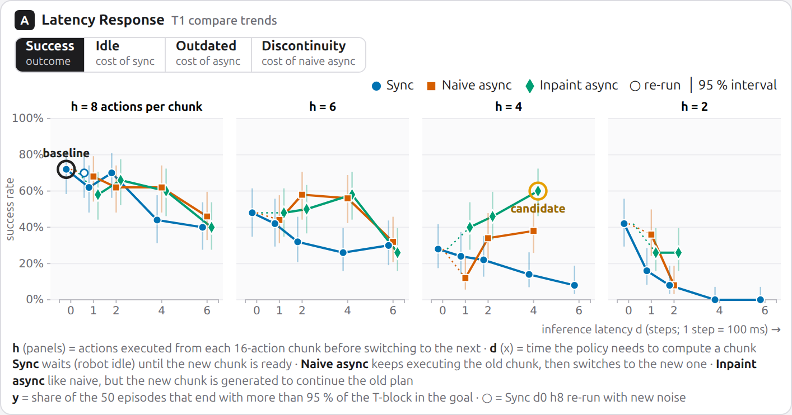
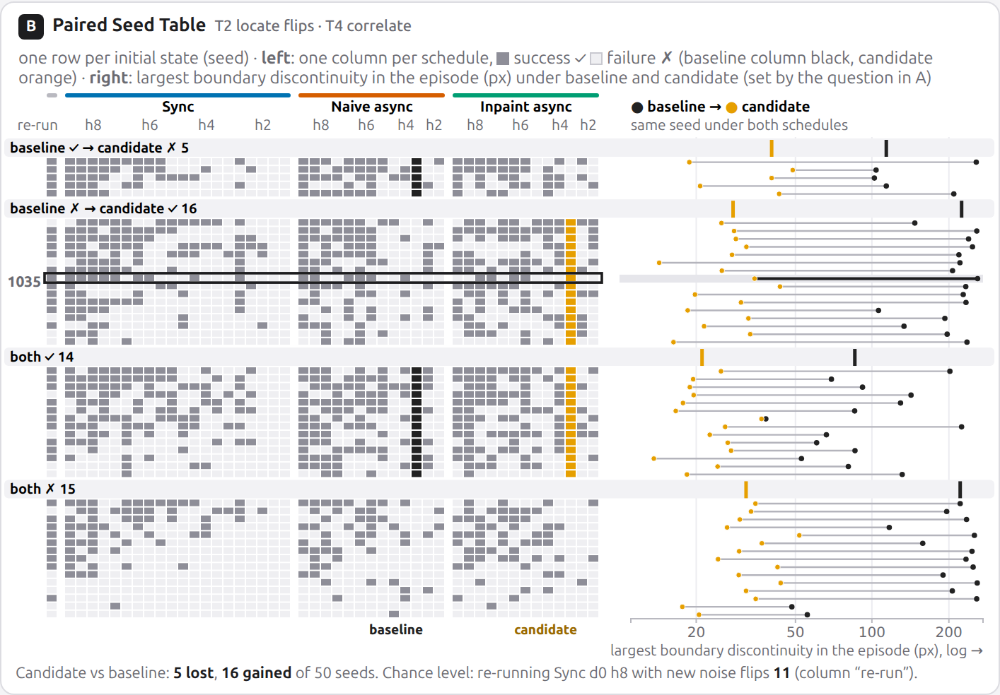

Modern robot policies (neural networks that map camera images, and for vision-language-action models also a text instruction, to motor commands) predict a chunk of future actions from one observation and execute its first h actions open-loop, i.e. without looking at the scene again (h = execution horizon). Because inference takes time d (latency),
the robot either waits (synchronous) or keeps executing an old chunk and switches when a new one arrives (asynchronous).
Researchers tune the strategy, the latency budget and the execution horizon from aggregate success curves.
LagLens replays one pretrained policy from the same {{N_SEEDS}} initial states under {{N_SCHED}} execution schedules (plus a noise replicate),
logs every predicted chunk, and links four d3.js views so that an analyst can go from “which schedule is robust?” down to “which chunk hand-over pushed the block away?”.
1 · What: Data Abstraction
Source. We generated the data ourselves (no public dataset logs per-inference chunks). In the simulated PushT task, a round pusher (the agent, seen from above) must push a T-shaped block onto a fixed T-shaped goal.
The pretrained lerobot/diffusion_pusht Diffusion Policy [2] turns the last 2 camera frames into a chunk of 16 actions (2-D target positions of the agent) by iteratively removing noise from a random start (10 DDIM denoising steps, CPU, 10 Hz: 1 step = 100 ms); since every chunk starts from random noise, outcomes are stochastic. A schedule = strategy × latency d × execution horizon h:
sync (hold still for d steps, then execute h actions), naive async (keep executing the old chunk while inference runs, switch after d steps and skip the d outdated actions),
and inpaint async (as naive, but the new chunk is generated with the already committed actions held fixed and the old plan softly blended in over the overlap; a training-free approximation of Real-Time Chunking [8]).
Async schedules with d = 0 equal sync d = 0, and d > h is infeasible (two inferences would overlap), giving 46 schedules. A replicate of sync d0 h8 with different sampling noise measures chance flips.
Dataset type: a multidimensional table of episodes ({{N_EP}} items × {{N_ATTR}} attributes, {{CSV_KB}} KB), each linked to two temporal tables, steps ({{N_STEPS}} items) and chunks ({{N_CHUNKS}} items, each with 16 predicted 2-D actions),
and to a 2-D spatial field (512 × 512 px workspace); {{DETAIL_MB}} MB of JSON lazy-loaded per schedule.
Keys: strategy, latency, horizon, replicate (→ schedule), seed (→ episode), t (→ step), chunk id (→ chunk). Everything else is a value.
Derived metrics.Chunk-boundary discontinuity (columns seam_gap_*; the position gap at chunk transitions studied in [8,11,12]): at every hand-over from chunk k to k+1, the distance between the first action executed from k+1 and the action k had planned next.
Motion while thinking: for every executed chunk, the distance the robot moved between the camera picture the chunk was planned from and the step the chunk was ready, i.e. how much the scene changed that the plan did not see. Staleness (staleness_mean, {{STALE_RANGE}} steps): age of that picture when each action is executed; it averages d + (h−1)/2 and is identical for all strategies at equal d, h, so it does not separate them. Step values: agent/block x, y (interval, px), block θ (cyclic), action x, y, chunk id, index j (0–15), age (steps since its observation), held (1 = idle step), coverage.
Goals/needs: choose strategy and horizon for a real arm whose GPU server is 60–250 ms away; explain why episodes fail, with per-episode evidence aligned with what the policy planned.
Pain points: only success tables and videos; cannot tell whether a failure came from waiting, an outdated plan or a jump; real-robot reruns are expensive.
Arjun Mehta · secondary · 37 · ML platform engineer, robotics start-up, Seoul
Goals/needs: set a latency budget and a default strategy for the async serving stack; know whether a drop is real or a few lucky seeds.
Pain points: papers report curves for other robots; no shared vocabulary with researchers. Difference: systems vs. policy expertise; aggregate (T1, T2) vs. episode-level (T3, T4) questions.
Portraits: public-domain StyleGAN images (Wikimedia Commons); the people do not exist.
3 · Why: Task Abstraction
#
Action → target
Why
Expected outcome
T1
Compare → trends of success and of each strategy's cost (idle time, motion while thinking, discontinuity) across schedules
pick a schedule for the latency the lab actually has
robust region and a latency budget per strategy
T2
Locate → outliers: initial states whose outcome flips between reference R and candidate C
aggregate rates hide which situations break; paired seeds isolate the schedule effect
a set of fragile seeds; flips separated from chance
T3
Identify → features in time and space: where idling, outdated plans and discontinuities occur in a flipped episode
diagnose the failure mechanism, not just its rate
a causal hypothesis tied to specific chunks
T4
Discover → correlation between boundary discontinuities and task outcome over paired episodes
test the claim that failures come with larger chunk-boundary artifacts [12]
evidence for or against a strategy, per seed
4 · How: Vis Idiom Design
Figure 1. LagLens (live: R = inpaint async d4 h4, C = naive async d4 h4, seed 1035, window t = 100–140). A Latency Response, B Paired Seed Table, C Workspace Replay, D Execution Timeline. All views share one R/C pair, one seed and one seed selection.
Design goal: make the cost of each strategy visible. Sync pays with time (the robot idles while the policy thinks: idle share ≈ d/(h+d), 51 % at d4 h4), naive async with discontinuity (no idling, but the new chunk can pick another mode, i.e. another way of pushing: mean discontinuity 43.5 px at d4 h4), both async strategies with outdated plans (the robot keeps moving while the policy thinks: inpaint 30.8 px and naive 47.7 px vs. 11.5 px sync at d4 h4), inpaint async with small discontinuities (8.0 px). Each cost has one signature: A's “mechanism” metrics, D's think/act tracks (alternating vs. overlapping) and discontinuity bars in the motion track, C's magenta discontinuity segment. A first version (5 views, ~10 hues, numbers in every heatmap cell) was judged cluttered; we redesigned it with the VIS literature below (full rationale: docs/design_rationale.md).
View (task)
Idiom, marks & channels — why
Interaction
A Latency Response (T1)
Line-chart small multiples, one panel per horizon h (shared y); x = latency d on its true scale, y = metric (position on a common scale, the most accurate magnitude channel [16,17]); strategies superposed for direct sync-vs-async comparison, hue + redundant shape [18]. Thin 95 % intervals (Wilson / t) instead of bars [19]; hover gives the paired difference to R.
click = C, shift-click = R; one question bar (Success · Idle = cost of sync · Outdated = robot motion while thinking (cost of async) · Discontinuity = cost of naive async) sets A's y and B's dumbbells; legend hover; recomputes on the seeds selected in B.
B Paired Seed Table (T2, T4)
Composite, Table-Lens-like view [20]: one row per seed shared by an outcome matrix (filled = success; R's column black, C's orange; columns grouped by strategy) and dumbbells R → C of the attribute that belongs to A's question (position, symlog for discontinuities). Rows grouped by R→C change (spatial region), robust seeds first, so flips break their band; a re-run column gives the chance level; band ticks = medians.
no controls of its own; click header = C; click cell = open episode; brush dumbbells or click a band = select seeds (cross-filters A [21], dims rows).
C Workspace Replay (T3)
Juxtaposed R | C maps at equal scale (true geometry) [18]. Only the current chunk (filled = executed, hollow dashed = thrown away), the chunk still being computed (dotted grey) and the latest discontinuity (magenta segment, length = gap); a dotted outline of what the policy saw (block and pusher in the camera picture of the current chunk) with an arrow to the pusher now; status line in strategy terms (“idle: waiting for inference”).
play / scrub / keys; hover a planned point = when planned and executed; click = jump; D's window highlights the path.
D Execution Timeline (T3)
Gantt lanes on a shared time axis [22]: per run a think track (inference intervals) and an act track (chunk spans, alternating tints, hatched = idle); a motion track (movement per step as a grey area; discontinuities as magenta bars on the same scale, so a jump is read against normal motion); coverage lines with the 95 % threshold. The chunk at the cursor (or hovered) is traced picture ○ → think → act.
brush a window (→ C), hover a chunk (→ its plan in C), click = cursor.
Hue has one meaning per view family: R near-black, C orange (identity); sync blue, naive vermillion, inpaint green (strategy, with ●■◆); magenta = discontinuity; all else grey. CVD-checked with Machado et al.'s simulation (R/C ΔEOK ≥ 48). Following the rules of parsimony and consistency [23], the former flip matrix and seed-shift plot became one view, and our own walkthrough showed that ten controls with technical names (Δ mode, sort orders, an 8-item attribute list, playback speed) were hard to understand, so they were reduced to the R/C pair and one four-button question bar named after who pays each cost. Every term and encoding is also defined in place (R = baseline, C = compared in the header; key lines for h, d, strategies, cells and tracks under each view), so the guide is not needed to decode the views.
Sketch → implementation: the sketch (Fig. 2) shows the redesigned layout and is implemented as drawn.
Figure 2. Low-fidelity sketch (purple = interaction and linking; marks are placeholders).
5 · Implementation
Interface (src/): plain ES modules + d3.js v7.9.0 only (bundled, no other charting library). One shared state object with a d3.dispatch bus; each view re-renders only for the state keys it depends on. Per-schedule logs (≤ 5.3 MB) are fetched lazily and indexed once (executed index set per chunk), so scrubbing and hovering stay interactive. URL parameters reproduce any view state (used for every figure here).
Data pipeline (scripts/): generate_rollouts.py runs all seeds of a schedule in lockstep so that one batched diffusion call serves all 50 environments (CPU, ≈ 2–10 min per schedule); build_dataset.py derives metrics; verify_dataset.py checks the ≥ 100 items / ≥ 6 attributes requirement.
Testing: ui_test.py loads the app in headless Chromium, runs {{N_UI_CHECKS}} interaction checks across all views, and fails on any console error (all pass, 0 errors). Two generator bugs found during analysis (an off-by-one inpainting mask and a dropped chunk when d = h) were fixed and the affected data regenerated.
6 · Case Study: Mara chooses an execution schedule for 400 ms of latency
Mara's server adds ≈ 400 ms (d = 4). She opens LagLens with R = sync d0 h8, the policy's default.

Figure 3. A: success rate vs. latency per horizon (C = inpaint d4 h4).Figure 4. B with C = noise re-run, rows grouped by R→C change (top shown).
Finding 1 (T1): at 400 ms, inpainting is the only strategy that stays flat across horizons.
In A (Fig. 3) no point lies above the zero-latency baseline (sync d0 h8, 72 %). At d = 4, the blue sync curves fall in every panel, to 44 / 26 / 14 / 0 % for h = 8 / 6 / 4 / 2 (idle share up to 67 %), naive async to 62 / 56 / 38 %, while inpaint async holds 60 / 58 / 60 %.
Pressing Discontinuity shows why naive degrades at short horizons: its mean discontinuity grows to 43.5 px at d4 h4 and 94.2 px at d2 h2, while inpainting stays ≤ 20.6 px everywhere. The horizon also matters without latency: sync d0 succeeds 72 % at h8 but only 28 % at h4, the jittery re-planning Chi et al. reported [2].
Finding 2 (T2): about one in five outcomes flips by chance, so small differences are noise.
Setting C to the noise replicate (Fig. 4) gives 6 losses and 5 gains: 11 of 50 seeds (22 %) flip with an identical schedule. Schedules such as naive d1 h8 (9 losses / 7 gains) or sync d2 h8 (7 / 6) are therefore indistinguishable from the baseline, whereas sync d4 h8 (19 / 5) is a real loss. Within each band the most robust seeds come first and the hover reveals fragile ones: seed 1001 succeeds under R but in only 15 % of all schedules, so Mara removes such seeds from her claims.
Figure 5. Seed 1035, R = inpaint d4 h4 (success), C = naive d4 h4 (failure); window t = 100–140 brushed in D, cursor at t = 116.
Finding 3 (T3): naive async fails through “mode ping-pong” at chunk discontinuities.
For seed 1035 both schedules act on equally old pictures (4–7 steps) and naive async moves somewhat more while thinking (mean 60 vs. 38 px), yet it is even ahead until t ≈ 105 (coverage 86 % vs. 66 %). In D's motion track, C's discontinuity bars then explode (184 px at t = 112, 259 px at t = 116, 190–237 px afterwards), while R's stay below 21 px.
Scrubbing C to t = 116 shows the cause (C's dotted outline: the pusher has moved 176 px since the picture at t = 112, R's only 38 px): the old chunk (planned from the observation at t = 108) heads to the top of the block, the new chunk (planned at t = 112, after the agent had moved down) starts at the bottom and turns left. The agent swings across the T, which slides out of the goal: coverage falls from 73 % (t = 112) to 0 % (t = 118). Inpainting keeps the committed tail of the old plan, so R's fans continue the same motion and the episode finishes at t = 204.

Figure 6. B with R = naive d4 h4, C = inpaint d4 h4, question “Discontinuity”: largest discontinuity per episode (log axis); band ticks = medians.
Finding 4 (T4): naive-async failures come with large discontinuities; inpainting shrinks every discontinuity but not every failure.
With R = naive d4 h4 and C = inpaint d4 h4, B (Fig. 6) groups the 50 seeds by outcome change. The black median ticks separate the bands: seeds that failed under naive async have median max discontinuities of 221–224 px, seeds that succeeded 86–114 px. All 50 dumbbells point left: inpainting lowers the largest discontinuity of every seed, to at most 52 px. 16 seeds are rescued and 5 lost (5 ≤ 11, within the noise floor of Finding 2).
Yet 15 seeds still fail under inpainting although their discontinuities (median 32 px) are as small as in successful runs (21–28 px), so their failures need another explanation (e.g. reduced reactivity), which Mara inspects next with C/D; selecting that band re-aggregates A on those 15 seeds. Over all schedules, failed naive episodes have a median max discontinuity of 81 px vs. 50 px for successes, consistent with [12]; for inpainting 23 vs. 20 px.
Outcome. Mara proposes inpaint async with h = 4–8 for d ≈ 4, reports differences only beyond the 11-flip noise floor, and gives Arjun a latency budget: sync is acceptable only up to d = 2 at h = 8.
7 · Limitations
One simulated task and one policy; latency is quantised to 100 ms steps; the inpainting strategy is a training-free approximation of RTC; a faster 10-step denoising schedule (DDIM) replaces the original 100-step one (DDPM) for CPU feasibility (the replicate shows that this changes outcomes of individual seeds but not the 70–72 % baseline rate). With 50 seeds, success differences below ≈ 11 flips should not be interpreted.
AI Usage Disclosure
This project was built with Claude Code (Anthropic, Claude Opus 5.5), directed and reviewed by the student. Written by AI: the literature survey and topic comparison, all data-generation and preprocessing scripts, the complete interface code in src/ (d3.js), the tests, the proposal slides and sketch, the personas, and this report's text, figures and screenshots (produced by operating the interface through scripted states). Human: topic choice among AI-proposed candidates, design requests (more and richer views; later a less cluttered, literature-grounded redesign focused on sync vs. async), deployment approval, review. Numbers in the slides and this report are filled in automatically from the data files. External code, data and images are listed below and in docs/references.md; a dated log is in docs/ai_disclosure.md.
References & Credits
[1] Zhao et al. Learning Fine-Grained Bimanual Manipulation with Low-Cost Hardware (ACT). RSS 2023. arXiv:2304.13705
[2] Chi et al. Diffusion Policy: Visuomotor Policy Learning via Action Diffusion. RSS 2023. arXiv:2303.04137
[3] Black et al. π0: A Vision-Language-Action Flow Model. 2024. arXiv:2410.24164
[4] Pertsch et al. FAST: Efficient Action Tokenization for VLA Models. 2025. arXiv:2501.09747
[5] Kim, Finn, Liang. Fine-Tuning VLA Models: Optimizing Speed and Success. 2025. arXiv:2502.19645
[6] Shukor et al. SmolVLA (asynchronous inference). 2025. arXiv:2506.01844
[7] Liu et al. Bidirectional Decoding. ICLR 2025. arXiv:2408.17355